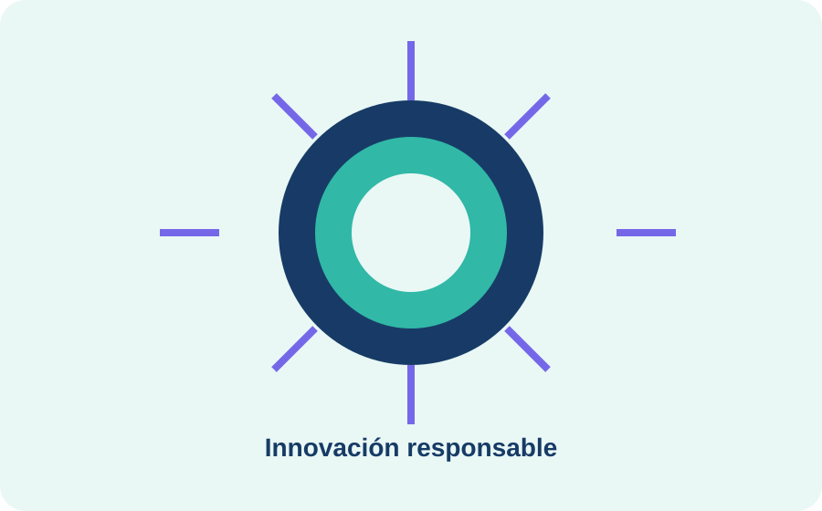

Oportunidades
Servicios más personalizados, nuevos empleos digitales, automatización y acceso global a conocimiento.
La evolución de la web combina nuevas capacidades técnicas con la necesidad de seguridad, ética, accesibilidad y sostenibilidad.
Las tecnologías emergentes pueden mejorar servicios y experiencias, aunque requieren evaluación y formación continua.

Servicios más personalizados, nuevos empleos digitales, automatización y acceso global a conocimiento.
Desinformación, ataques informáticos, sesgos algorítmicos y uso indebido de datos personales.
Diseñar con transparencia, accesibilidad, protección de datos y supervisión humana.
El futuro digital será más beneficioso si la innovación se acompaña de educación, pensamiento crítico, normas claras y oportunidades de acceso para toda la población.